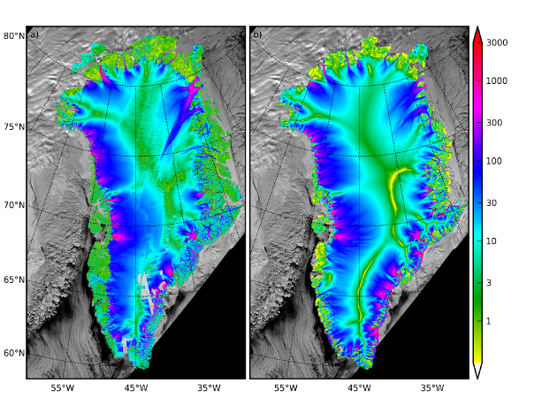

This page holds a mostly-historical list of people and presentations.

Observed (left; Joughin et al, 2010) and PISM-modeled (right;) surface speed for the Greenland ice sheet. From a 1km grid. Click on image to get 7Mb high res version.
E. Bueler, Implicit time-stepping for ice sheets, Invited presentation at 2017 SIAM Computational Science and Engineering meeting, Atlanta, March 2017.
E. Bueler, Better subglacial hydrology into
PISM (8 MB, PDF) PresentationIGS Symposium on Glaciers and Ice Sheets in a
Warming Climate, Fairbanks, June 2012.
E. Bueler, A. Aschwanden, D. Della Guistina, R. Hock, C. Khroulev, D.
Maxwell, and M. Truffer, PISM, a Parallel
Ice Sheet Model (stable0.3 release), (3.6MB,PDF). Poster at European
Geosciences Union General Assembly, Vienna, Austria, May 2010.
E. Bueler, C. Khroulev, A.
Aschwanden, and I. Joughin, Modeled and observed fast flow in the Greenland
ice sheet , (6 MB, PDF). Presentation at
IGS International Symposium on Glaciology in the International Polar Year,
Newcastle, UK, July 2009
R. Calov, R. Greve, P. Huybrechts, E. Bueler, C. Ritz, D. Pollard, F.
Pattyn, and L. Tarasov. First results of the ISMIP-HEINO model
intercomparison project (PDF). Poster at the European
Geosciences Union General Assembly, Vienna, Austria, April 2007.
Kallen-Brown, J.A., E.L. Bueler, C.S. Lingle, and D.N. Covey. A 3-D thermomechanical ice-sheet model:
preliminary tests with the Goldsby-Kohlstedt flow law. Presented at
the 10th West Antarctic Ice Sheet Workshop, 17-20 Sept. 2003, Sterling,
Virginia.
Ben Sperisen, Ice Sheet Modelling: Numerics and
Visualization, final
paper and presentation from ARSC Undergraduate
Research Challenge, Summer 2008. Here are IDV animations by Ben Sperisen of PISM
output (animated GIFs; from EISMINT-Greenland
CCL3 runs; for illustration of visualization possibilities):
Latrice Bowman, Numerical analysis of ice flow:
numerical solutions using finite difference approximations,
M.S. Mathematics, UAF, project, 2002.
Codes for
verification:
The current suite of verification tests for PISM includes many different exact solutions. Source codes for all of these, and some documentation, are included in the PISM source code---see src/verif/tests/---and in the PISM User's Manual. See the PISM homepage at www.pism-docs.org.
{kind=link}
{kind=link}
{kind=link}
{kind=link}
{kind=link}